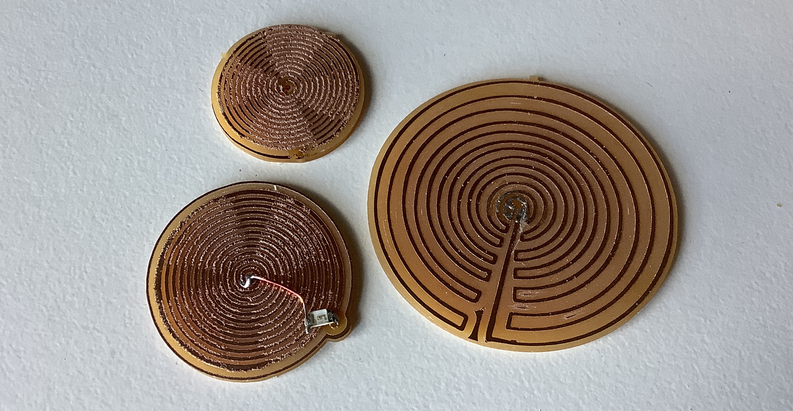

Assignments
- Characterize your PCB production process
- Make an in-circuit programmer that includes a microcontroller
- Test other PCB processes
1. PCB production process
We got trained on the Roland SRM-20 and the Other mill. For both machines, a 1/64" bit is used for traces while a 1/32" bit for cutting. EECS section’s line test using the Roland machine yielded the following results:
.
The smallest width mods will attempt to mill out is about 0.016" (0.4064mm), although traces can be 0.001" wide. The traces on the Roland machine look neater than that from the Other mill.
PCB milling steps
Preparation: firmly mount a sacrificial board into the machine, followed by a copper board with double sided tape.
- Prepare a black-and-white png file at 1000 dpi. The mill cuts from white to black, so traces should be in white, whereas parts to be milled away in black. Doing the opposite will cause traces to be thinner by the width of the bit. Mods can invert the colors if the file is wrong.
- Upload the png into mods and choose the right server program, in my case Roland > mill > SRM-20 > PCB png.
- To mill traces, select
mill traces (1/64). - Press
calculate. Check that paths are correct. The system can be tricked into milling thinner gaps by decreasing the tool diameter in mods. It is probably better to fix the source file if you don’t want scraggly lines. - Load the corresponding bit high into the collet and calibrate the origin (
xandyonly, leavezat10) using the buttonmove to origin. This corresponds to the bottom left corner of the file. - Loosen the bit and carefully lower it so it touches the pcb. Tighten it again, but not too aggressively.
- Click
return to home. - Select
/dev/usb/ip1as the device. - If
send file to printeris not in boldface, press calculate again. Then send file to printer. - To mill outlines and holes, select
mill outlines (1/32)and repeat steps 4 - 9. - Use a flat nose screwdriver to remove the PCB from the machine. Remove the bits or move them high into the collet.
- Gently sand away burs, wash, and inspect the PCB for errors.
The machine in EDS is a little temperamental, and may need to be restarted several times if it does not respond to print files (apparently the door sensor is faulty).
2. In-circuit programmer
I made Free-DAP, a CMSIS-DAP debugger/programmer for JTAG. The files are here (see hello.CMSIS-DAP.10.D11C).
After milling the board, I soldered cautiously and was thankfully able to get it programmed with the Atmel firmware right away.
Not pictured above is two layers of scrap vinyl under the USB end, to help it fit more snugly into ports.
3. PCB fun
The idea
I wanted to make a passive PCB board, and thought about creating NFC powered LEDS in Van Gogh’s Starry Night sky. The clouds kind of already look like antennae, and I decided to make them so.
Having seen Lumi Deco Nails (and their dull cousins from Adafruit), I know it is possible to power LEDs attached to teeeeny antenna with 13.56MHz NFC fields, but I still needed to find a way to design my own. The commercial circuits appear to have tuning capacitors, but I wanted to use the LED’s intrinsic capacitance for my circuit.
Planning the circuit
The circuit I used has just two components, an LED and an antenna.
The antenna behaves like an inductor \(L_{antenna}\), and has a small resistance \(R_{antenna}\). The LED also has a resistance \(R_{led}\) and an intrinsic capacitance \(C_{led}\). Together, they behave like a series RLC circuit, from which there is a resonant frequency \(f = \frac{1}{2 \pi \sqrt{LC}}\). My phone emits a field at \(f\) = 13.56MHz. The LEDs I have from CO-RODE KIT do not have a searchable datasheet, but I used a web-referenced benchmark of 50pF. Solving for \(L\), we need to approach a target inductance of 2.75μH in the antenna so that the LED can receive a strong power from NFC.
When exposed to an NFC field, voltage is induced in the antenna, powering the LED. At resonant frequency, the total impedance reaches its minimum value. The current in the antenna and energy transferred to the LED would be optimized.
Regular geometry antenna (e.g. spiral, rectangle) are easier for calculation. For an Archimedean spiral antenna, inductance (in Henry) can be found by:
\[L_{antenna} = 31.33 \times 4 \pi \times 10^{-7} \times N^2 \times \frac{a^2}{8a + 11c}\]where \(a\) is the average of inner and outer radii (in meters), \(c\) is the absolute difference between outer and inner radii (in meters), and N is the number of turns. I made this spreadsheet to calculate how many turns I needed to approach the target inductance as closely as possible (i.e. Ratio = 1). My designs are inoptimal but still transmit enough power to light the LED.
Creating the design
Following the aforementioned line test, I tried to create a spiral with a 0.4mm line width. However, mods was not terribly pleased and threw up a practically blank mill path. This was because some of the gaps turned out smaller in my design - Anthony pointed out that reducing the ‚Äútool diameter‚Äù by 0.001" tricks mods into milling the lines regardless. I decided to try my luck and mill it anyway. The lines came out a tad fuzzy, but I was thrilled to find that it worked üî•
Commercial NFC tags are usually multi-layer PCB or wire coils, so making a single-layer substitute was a little tricky. I ended up milling holes at the ends of the antenna and, created legs for SMD LEDs to turn them into “through hole” components for testing.

Low current / voltage probably LEDs would work best, but the ones I have do not have data sheets, so I milled a couple more (now properly sized) antennas to test it out. I am delighted that they all worked!
I used Inkscape, Illustrator, and PhotoShop to start, and I keen on creating a JavaScript generator to create the spirals more easily. The bonus of this approach is that you can use angle to make cool Archimedean patterns, keeping in mind that for antenna, lines should not intersect.
Coming together ✨
I like how it changes under different lighting conditions üí°

Future improvements
- I want to make the antennas better disguised among the clouds. I’ve tried this hand-drawn antenna with a split spiral (to facilitate surface-mount LEDs), but I am still trying to improve it.
- The LEDs could perhaps be brighter with some spectrum analysis and optimization of stray capacitance.
- The active emission area of a phone’s NFC field is quite narrow, it might be nice to have a bigger surface area.
This being said, I was initially skeptical that I could even make this work, and this exercise has given me some confidence that I can trust the science :p